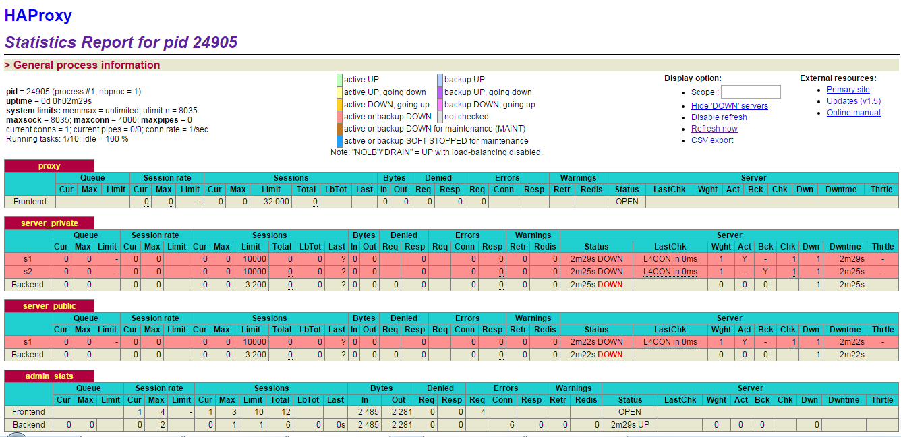

目录
一、四层和七层负载均衡的区别
所谓的四层就是ISO参考模型中的第四层。四层负载均衡也称为四层交换机，它主要是通过分析IP层及TCP/UDP层的流量实现的基于IP加端口的负载均衡。常见的基于四层的负载均衡器有LVS、F5等。
以常见的TCP应用为例，负载均衡器在接收到第一个来自客户端的SYN请求时，会通过设定的负载均衡算法选择一个最佳的后端服务器，同时将报文中目标IP地址修改为后端服务器IP，然后直接转发给该后端服务器，这样一个负载均衡请求就完成了。从这个过程来看，一个TCP连接是客户端和服务器直接建立的，而负载均衡器只不过完成了一个类似路由器的转发动作。在某些负载均衡策略中，为保证后端服务器返回的报文可以正确传递给负载均衡器，在转发报文的同时可能还会对报文原来的源地址进行修改。整个过程下图所示。

同理，七层负载均衡器也称为七层交换机，位于OSI的最高层，即应用层，此时负载均衡器支持多种应用协议，常见的有HTTP、FTP、SMTP等。七层负载均衡器可以根据报文内容，再配合负载均衡算法来选择后端服务器，因此也称为“内容交换器”。比如，对于Web服务器的负载均衡，七层负载均衡器不但可以根据“IP+端口”的方式进行负载分流，还可以根据网站的URL、访问域名、浏览器类别、语言等决定负载均衡的策略。例如，有两台Web服务器分别对应中英文两个网站，两个域名分别是A、B，要实现访问A域名时进入中文网站，访问B域名时进入英文网站，这在四层负载均衡器中几乎是无法实现的，而七层负载均衡可以根据客户端访问域名的不同选择对应的网页进行负载均衡处理。常见的七层负载均衡器有HAproxy、Nginx等。
这里仍以常见的TCP应用为例，由于负载均衡器要获取到报文的内容，因此只能先代替后端服务器和客户端建立连接，接着，才能收到客户端发送过来的报文内容，然后再根据该报文中特定字段加上负载均衡器中设置的负载均衡算法来决定最终选择的内部服务器。纵观整个过程，七层负载均衡器在这种情况下类似于一个代理服务器。整个过程如下图所示。

对比四层负载均衡和七层负载均衡运行的整个过程，可以看出，在七层负载均衡模式下，负载均衡器与客户端及后端的服务器会分别建立一次TCP连接，而在四层负载均衡模式下，仅建立一次TCP连接。由此可知，七层负载均衡对负载均衡设备的要求更高，而七层负载均衡的处理能力也必然低于四层模式的负载均衡。
二、HAProxy与LVS的异同
通过之前文章的介绍，大家应该基本清楚了HAProxy负载均衡与LVS负载均衡的优缺点和异同了。下面就这两种负载均衡软件的异同做一个简单总结：
1）两者都是软件负载均衡产品，但是LVS是基于Linux操作系统实现的一种软负载均衡，而HAProxy是基于第三应用实现的软负载均衡。
2）LVS是基于四层的IP负载均衡技术，而HAProxy是基于四层和七层技术、可提供TCP和HTTP应用的负载均衡综合解决方案。
3）LVS工作在ISO模型的第四层，因此其状态监测功能单一，而HAProxy在状态监测方面功能强大，可支持端口、URL、脚本等多种状态检测方式。
4）HAProxy虽然功能强大，但是整体处理性能低于四层模式的LVS负载均衡，而LVS拥有接近硬件设备的网络吞吐和连接负载能力。
综上所述，HAProxy和LVS各有优缺点，没有好坏之分，要选择哪个作为负载均衡器，要以实际的应用环境来决定。
三、快速安装HAProxy集群软件
yum install haproxy
文件存放位置：
/usr/sbin/haproxy #二进制文件
/usr/share/haproxy #共享文件
/var/lib/haproxy #库文件
/etc/rc.d/init.d/haproxy #启动二进制文件
/etc/logrotate.d/haproxy #日志切割
/etc/sysconfig/haproxy #配置
/etc/haproxy #配置目录
安装完成后，默认安装目录中没有配置文件，这里是将源码包里面的示例配置文件拷贝到配置文件目录
这样，HAProxy就安装完成了。
四、HAProxy基础配置文件详解
HAProxy配置文件根据功能和用途，主要有5个部分组成，但有些部分并不是必须的，可以根据需要选择相应的部分进行配置。
（1）global部分
用来设定全局配置参数，属于进程级的配置，通常和操作系统配置有关。
（2）defaults部分
默认参数的配置部分。在此部分设置的参数值，默认会自动被引用到下面的frontend、backend和listen部分中，因此，如果某些参数属于公用的配置，只需在defaults部分添加一次即可。而如果在frontend、backend和listen部分中也配置了与defaults部分一样的参数，那么defaults部分参数对应的值自动被覆盖。
（3）frontend部分
此部分用于设置接收用户请求的前端虚拟节点。frontend是在HAProxy1.3版本之后才引入的一个组件，同时引入的还有backend组件。通过引入这些组件，在很大程度上简化了HAProxy配置文件的复杂性。frontend可以根据ACL规则直接指定要使用的后端backend。
（4）backend部分
此部分用于设置集群后端服务集群的配置，也就是用来添加一组真实服务器，以处理前端用户的请求。添加的真实服务器类似于LVS中的real server节点。
（5）listen部分
此部分是frontend部分和backend部分的结合体。在HAProxy1.3版本之前，HAProxy的所有配置选项都在这个部分中设置。为了保持兼容性，HAProxy新的版本仍然保留了listen组件的配置方式。目前在HAProxy中，两种配置方式任选其一即可。
下面是一个完整的HAProxy配置文件
global
log 127.0.0.1 local0 info
maxconn 4096
user nobody
group nobody
daemon
nbproc 1
pidfile /usr/local/haproxy/logs/haproxy.pid
defaults
mode http
retries 3
timeout connect 10s
timeout client 20s
timeout server 30s
timeout check 5s
frontend www
bind *:80
mode http
option httplog
option forwardfor
option httpclose
log global
#acl host_www hdr_dom(host) -i www.zb.com
#acl host_img hdr_dom(host) -i img.zb.com
#use_backend htmpool if host_www
#use_backend imgpool if host_img
default_backend htmpool
backend htmpool
mode http
option redispatch
option abortonclose
balance static-rr
cookie SERVERID
option httpchk GET /index.jsp
server 237server 192.168.81.237:8080 cookie server1 weight 6 check inter 2000 rise 2 fall 3
server iivey234 192.168.81.234:8080 cookie server2 weight 3 check inter 2000 rise 2 fall 3
backend imgpool
mode http
option redispatch
option abortonclose
balance static-rr
cookie SERVERID
option httpchk GET /index.jsp
server host236 192.168.81.236:8080 cookie server1 weight 6 check inter 2000 rise 2 fall 3
listen admin_stats
bind 0.0.0.0:9188
mode http
log 127.0.0.1 local0 err
stats refresh 30s
stats uri /haproxy-status
stats realm welcome login\ Haproxy
stats auth admin:admin~!@
stats hide-version
stats admin if TRUE
五、启动与测试Haproxy的负责均衡功能
service haproxy
Usage: /etc/init.d/haproxy {start|stop|status|restart|try-restart|reload|force-reload}
启动haproxy
service haproxy start
停止haproxy
service haproxy stop
平滑重启
service haproxy reload
六、HAProxy负载均衡器算法与使用技巧
1、HAProxy支持的负载均衡算法
（1）、roundrobin，表示简单的轮询，负载均衡基础算法
（2）、static-rr，表示根据权重
（3）、leastconn，表示最少连接者先处理
（4）、source，表示根据请求源IP
（5）、uri，表示根据请求的URI；
（6）、url_param，表示根据请求的URl参数来进行调度
（7）、hdr(name)，表示根据HTTP请求头来锁定每一次HTTP请求；
（8）、rdp-cookie(name)，表示根据据cookie(name)来锁定并哈希每一次TCP请求。
2、常用的负载均衡算法
（1）轮询算法：roundrobin
（2）根据请求源IP算法：source
（3）最少连接者先处理算法：lestconn
七、通过HAProxy的ACL规则实现智能负载均衡
由于HAProxy可以工作在七层模型下， 因此，要实现HAProxy的强大功能，一定要使用强大灵活的ACL规则，通过ACL规则可以实现基于HAProxy的智能负载均衡系统。HAProxy通过ACL规则完成两种主要的功能，分别是：
1）通过设置的ACL规则检查客户端请求是否合法。如果符合ACL规则要求，那么就将放行，反正，如果不符合规则，则直接中断请求。
2）符合ACL规则要求的请求将被提交到后端的backend服务器集群，进而实现基于ACL规则的负载均衡。
HAProxy中的ACL规则经常使用在frontend段中，使用方法如下：
1acl 自定义的acl名称 acl方法 -i [匹配的路径或文件]
其中：
acl：是一个关键字，表示定义ACL规则的开始。后面需要跟上自定义的ACL名称 。
acl方法:这个字段用来定义实现ACL的方法，HAProxy定义了很多ACL方法，经常使用的方法有hdr_reg(host)、hdr_dom(host)、hdr_beg(host)、url_sub、url_dir、path_beg、path_end等。
-i：表示忽略大小写，后面需要跟上匹配的路径或文件或正则表达式。
与ACL规则一起使用的HAProxy参数还有use_backend，use_backend后面需要跟上一个backend实例名，表示在满足ACL规则后去请求哪个backend实例，与use_backend对应的还有default_backend参数，它表示在没有满足ACL条件的时候默认使用哪个后端backend。
下面列举几个常见的ACL规则例子：
acl www_policy hdr_reg(host) -i ^(www.z.cn|z.cn)
acl bbs_policy hdr_dom(host) -i bbs.z.cn
acl url_policy url_sub -i buy_sid=
use_backend server_www if www_policy
use_backend server_app if url_policy
use_backend server_bbs if bbs_policy
default_backend server_cache
八、使用HAProxy的Web监控平台
HAProxy虽然实现了服务的故障转移，但是在主机或者服务出现故障的时候，并不能发出通知告知运维人员，这对于及时性要求很高的业务系统来说，是非常不便的，不过，HAProxy似乎也考虑到了这一点，在新的版本中HAProxy推出了一个基于Web的监控平台，通过这个平台可以查看此集群系统所有后端服务器的运行状态，在后端服务或服务器出现故障时，监控页面会通过不同的颜色来展示故障信息，这在很大程度上解决了后端服务器故障报警的问题，运维人员可通过监控这个页面来第一时间发现节点故障，进而修复故障。

#/usr/local/sbin/haproxy -f /etc/haproxy/haproxy.cfg -st `cat /var/run/haproxy.pid`
####################全局配置信息########################
#######参数是进程级的，通常和操作系统（OS）相关#########
global
maxconn 20480 #默认最大连接数
log 127.0.0.1 local3 #[err warning info debug]
chroot /var/haproxy #chroot运行的路径
uid 99 #所属运行的用户uid
gid 99 #所属运行的用户组
daemon #以后台形式运行haproxy
nbproc 1 #进程数量(可以设置多个进程提高性能)
pidfile /var/run/haproxy.pid #haproxy的pid存放路径,启动进程的用户必须有权限访问此文件
ulimit-n 65535 #ulimit的数量限制
#####################默认的全局设置######################
##这些参数可以被利用配置到frontend，backend，listen组件##
defaults
log global
mode http #所处理的类别 (#7层 http;4层tcp )
maxconn 20480 #最大连接数
option httplog #日志类别http日志格式
option httpclose #每次请求完毕后主动关闭http通道
option dontlognull #不记录健康检查的日志信息
option forwardfor #如果后端服务器需要获得客户端真实ip需要配置的参数，可以从Http Header中获得客户端ip
option redispatch #serverId对应的服务器挂掉后,强制定向到其他健康的服务器
option abortonclose #当服务器负载很高的时候，自动结束掉当前队列处理比较久的连接
stats refresh 30 #统计页面刷新间隔
retries 3 #3次连接失败就认为服务不可用，也可以通过后面设置
balance roundrobin #默认的负载均衡的方式,轮询方式
#balance source #默认的负载均衡的方式,类似nginx的ip_hash
#balance leastconn #默认的负载均衡的方式,最小连接
contimeout 5000 #连接超时
clitimeout 50000 #客户端超时
srvtimeout 50000 #服务器超时
timeout check 2000 #心跳检测超时
####################监控页面的设置#######################
listen admin_status #Frontend和Backend的组合体,监控组的名称，按需自定义名称
bind 0.0.0.0:65532 #监听端口
mode http #http的7层模式
log 127.0.0.1 local3 err #错误日志记录
stats refresh 5s #每隔5秒自动刷新监控页面
stats uri /admin?stats #监控页面的url
stats realm xuequn\ xuequn #监控页面的提示信息
stats auth admin:admin #监控页面的用户和密码admin,可以设置多个用户名
stats auth admin1:admin1 #监控页面的用户和密码admin1
stats hide-version #隐藏统计页面上的HAproxy版本信息
stats admin if TRUE #手工启用/禁用,后端服务器(haproxy-1.4.9以后版本)
errorfile 403 /etc/haproxy/errorfiles/403.http
errorfile 500 /etc/haproxy/errorfiles/500.http
errorfile 502 /etc/haproxy/errorfiles/502.http
errorfile 503 /etc/haproxy/errorfiles/503.http
errorfile 504 /etc/haproxy/errorfiles/504.http
#################HAProxy的日志记录内容设置###################
capture request header Host len 40
capture request header Content-Length len 10
capture request header Referer len 200
capture response header Server len 40
capture response header Content-Length len 10
capture response header Cache-Control len 8
#######################网站监测listen配置#####################
###########此用法主要是监控haproxy后端服务器的监控状态############
listen site_status
bind 0.0.0.0:1081 #监听端口
mode http #http的7层模式
log 127.0.0.1 local3 err #[err warning info debug]
monitor-uri /site_status #网站健康检测URL，用来检测HAProxy管理的网站是否可以用，正常返回200，不正常返回503
acl site_dead nbsrv(server_web) lt 2 #定义网站down时的策略当挂在负载均衡上的指定backend的中有效机器数小于1台时返回true
acl site_dead nbsrv(server_blog) lt 2
acl site_dead nbsrv(server_bbs) lt 2
monitor fail if site_dead #当满足策略的时候返回503，网上文档说的是500，实际测试为503
monitor-net 192.168.16.2/32 #来自192.168.16.2的日志信息不会被记录和转发
monitor-net 192.168.16.3/32
########frontend配置############
#####注意，frontend配置里面可以定义多个acl进行匹配操作########
frontend http_80_in
bind 0.0.0.0:80 #监听端口，即haproxy提供web服务的端口，和lvs的vip端口类似
mode http #http的7层模式
log global #应用全局的日志配置
option httplog #启用http的log
option httpclose #每次请求完毕后主动关闭http通道，HA-Proxy不支持keep-alive模式
option forwardfor #如果后端服务器需要获得客户端的真实IP需要配置次参数，将可以从Http Header中获得客户端IP
########acl策略配置#############
acl xuequn_web hdr_reg(host) -i ^(www.xuequn.cn|ww1.xuequn.cn)$ #如果请求的域名满足正则表达式中的2个域名返回true -i是忽略大小写
#acl xuequn hdr(host) -i xuequn.cn #如果请求的域名满足xuequn.cn返回true -i是忽略大小写
#acl file_req url_sub -i killall #在请求url中包含killall=，则此控制策略返回true,否则为false
#acl dir_req url_dir -i allow #在请求url中存在allow作为部分地址路径，则此控制策略返回true,否则返回false
#acl missing_cl hdr_cnt(Content-length) eq 0 #当请求的header中Content-length等于0时返回true
########acl策略匹配相应#############
#block if missing_cl #当请求中header中Content-length等于0阻止请求返回403
#block if !file_req || dir_req #block表示阻止请求，返回403错误，当前表示如果不满足策略file_req，或者满足策略dir_req，则阻止请求
use_backend server_web if xuequn_web #当满足xuequn_web的策略时使用server_web的backend
use_backend server_blog if xuequn_blog #当满足xuequn_blog的策略时使用server_blog的backend
#redirect prefix http://192.168.16.3 code 301 if xuequn #当访问xuequn.cn的时候，用http的301挑转到http://192.168.16.3
default_backend server_bbs #以上都不满足的时候使用默认server_bbs的backend
##########backend的设置##############
#下面我将设置三组服务器 server_web，server_blog，server_bbs
###########################backend server_web#############################
backend server_web
mode http #http的7层模式
balance roundrobin #负载均衡的方式，roundrobin平均方式
cookie SERVERID #允许插入serverid到cookie中，serverid后面可以定义
option httpchk GET /index.html #心跳检测的文件
server web1 192.168.16.2:80 cookie web1 check inter 1500 rise 3 fall 3 weight 1
#服务器定义，cookie 1表示serverid为web1，check inter 1500是检测心跳频率rise 3是3次正确认为服务器可用，
#fall 3是3次失败认为服务器不可用，weight代表权重
server web2 192.168.16.3:80 cookie web2 check inter 1500 rise 3 fall 3 weight 2
#服务器定义，cookie 1表示serverid为web2，check inter 1500是检测心跳频率rise 3是3次正确认为服务器可用，
#fall 3是3次失败认为服务器不可用，weight代表权重
###################################backend server_blog###############################################
backend server_blog
mode http #http的7层模式
balance roundrobin #负载均衡的方式，roundrobin平均方式
cookie SERVERID #允许插入serverid到cookie中，serverid后面可以定义
option httpchk GET /index.html #心跳检测的文件
server blog1 192.168.16.2:80 cookie blog1 check inter 1500 rise 3 fall 3 weight 1
#服务器定义，cookie 1表示serverid为web1，check inter 1500是检测心跳频率rise 3是3次正确认为服务器可用，fall 3是3次失败认为服务器不可用，weight代表权重
server blog2 192.168.16.3:80 cookie blog2 check inter 1500 rise 3 fall 3 weight 2
#服务器定义，cookie 1表示serverid为web2，check inter 1500是检测心跳频率rise 3是3次正确认为服务器可用，fall 3是3次失败认为服务器不可用，weight代表权重
###################################backend server_bbs###############################################
backend server_bbs
mode http #http的7层模式
balance roundrobin #负载均衡的方式，roundrobin平均方式
cookie SERVERID #允许插入serverid到cookie中，serverid后面可以定义
option httpchk GET /index.html #心跳检测的文件
server bbs1 192.168.16.2:80 cookie bbs1 check inter 1500 rise 3 fall 3 weight 1
#服务器定义，cookie 1表示serverid为web1，check inter 1500是检测心跳频率rise 3是3次正确认为服务器可用，fall 3是3次失败认为服务器不可用，weight代表权重
server bbs2 192.168.16.3:80 cookie bbs2 check inter 1500 rise 3 fall 3 weight 2
#服务器定义，cookie 1表示serverid为web2，check inter 1500是检测心跳频率rise 3是3次正确认为服务器可用，fall 3是3次失败认为服务器不可用，weight代表权重